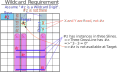

JEn
Junior Exocet has several extension types (JEn)
classified by the number of Targets (Objects) n.
JE1
JE1 is a type with one target. In JE2,
there is a fixed digit (problem digit or a digit determined by analysis) at the location of one target (object).
The elements of JE1 are Base, Base digit, one target (object), and a blank object with no Base digit.
The crossline of the base, and the Sline of the target and blank object are defined in the natural form of Junior Exocet.
There are two types of covering of S cells {S0, S1, S2}. This is a condition unique to JE1.
- S Criteria: Covered by two CoverLines.
- Wildcard Criteria: Covered by 3 CoverLines.

JE1 の論理
JE1の Base数字 のカバーの仕方別に次の論理が成り立ちます。
-
(1) Base digits that meets S criteria
- Proof of S-criterion Locked (CL:Cross-Line)
- 1) Assume that Base digit #a has two CoverLines in the S-Area.
- 2) A CrossLine that includes the S region requires a total of three #a instances.
- 3) Therefore, #a exists in the Target. (3-2=1)

-
(2) Base digit that meet the Wildcard criteria
- Proof of JE2 Locked (CL:Cross-Line)
- 1) Assume that the Base digit #z has more than 2 CoverLines in the S region.
- 2) A CrossLine that includes the S region requires a total of 3 #z instances.
- 3) Therefore, there is no #z in the Target. (3-3=0)

>Exclude JE1
If JE1 holds, the following exclusions can occur:
- The wildcard (#z) of the target is determined to be negative.
- The wildcard of the Base is determined to be positive, and the other digit of the Base is undecided.
- The wildcard in the escape is determined to be negative.
- The wildcard in the line-1 is determined to be positive. If there is only one of these, candidates other than the wildcard of the corresponding cell can be excluded.
- By determining the wildcards of the Base and target, the wildcard digit of this sphere of influence becomes negative.
The last exclusion (exclusion 5) is a propagating exclusion and can be left to the next step of analysis. GNPX includes direct exclusions from the Base and Target (Object) Wildcards to see the effect of the Wildcards.
GNPX implements direct exclusions from base wildcards and target (object) wildcards.

JE3
JE3 is a type with three targets. JE3 is a combination of two JE2s, as shown in the following figure,
which shares one target. By sharing, there are three targets.
Formally, it is possible to combine three solutions, so JE4,... is also possible.
However, it is completely normal for there to be multiple solutions to the same problem at the same stage,
and this can be seen in various analysis algorithms.
(Many multiple solutions can be seen in GNPX "Multiple Analysis".)
Simply combining multiple solutions does not make it a new algorithm.
If JE3 is meaningful, it would be, for example, if there is an exclusion that cannot be derived by each solution alone,
but can be derived directly by sharing one of the targets.
JE3 example
The following example is a solution to Example1 in the Bird document "07 JE3".
These are two solutions to the same problem and the same situation,
so the excluded cells and digits can be applied to the other solutions as well.
In this example, there are no exclusions due to the combination of two solutions.
by:David P Bird "JExocet Compendium"
http://forum.enjoysudoku.com/jexocet-compendium-t32370.html
"07 JE3 Examples v2a.odt"


From the left: Solution-1, Solution-2
..79.8...54.......6...7.5.....3...7......2.1...4.9.8.....1...2...8.4.9...6......3
JE2 Solution-1
Stem : r1c3
Base : r1c12#23 aligned type
Target1:r2c5 Companion1:-r3c5 Mirror1:r3c89
Target2:r2c7 Companion2:-r3c7 Mirror2:r3c46
CrossLine_ 0:c3 / 1:c5 / 2:c7
CoverLines
no:#1 size:2 CoverLine:r3,r8,-- (CLXidx:03,08,--) S012V:...4....9 ...4..... ........9
no:#2 size:2 CoverLine:r3,r8,-- (CLXidx:03,08,--) S012V:...4....9 ........9 ...4.....
no:#3 size:2 CoverLine:r4,r6,-- (CLXidx:04,06,--) S012V:....5.7.. ......7.. ....5....
--------------------------------------------------------------------------------
Explanation of candidate digits exclusion
Compatible digit check ... (in development)
incompatible pair(T1,T2) : #(1,2) (1,3) (2,1) (3,1)
valid pair(T1,T2) : #(2,3) (3,2)
r1c12 #1 is negative.
[Rule-3] Target1 r2c5#16 is a non-base candidate, then it is negative.
[Rule-3] Target2 r2c7#17 is a non-base candidate, then it is negative.
[Rule-9_nonBase] In Mirrar-2 r3c6#4 is locked non-BaseDigit. Then r3c46#1 is negative.
[Rule-10] Base(r1c12) are Fixed, then { r1c79#2 r2c349#2 r3c3#2 r1c78#3 r2c368#3 r3c3#3 } are negative.
(Both bases or both targets are in focus)
[Rule-12] Base(r1c12) are Fixed, then { r4c129#2 r9c14#2 } are negative. They prevent the Base from becoming positive.
[Rule-12] Base(r1c12) are Fixed, then { r5c12#3 r7c126#3 } are negative. They prevent the Base from becoming positive.
============================================================================
JE2 Solution-2
Stem : r3c7
Base : r3c89#1239 aligned type
Target1:r2c3 Companion1:-r1c3 Mirror1:-
Target2:r2c5 Companion2:-r1c5 Mirror2:r1c12
CrossLine 0:c7 / 1:c3 / 2:c5
CoverLines
no:#1 size:2 CoverLine:r4,r9,-- (CLXidx:03,08,--) S012V:........9 ...4....9 ...4.....
no:#2 size:2 CoverLine:r4,r9,-- (CLXidx:03,08,--) S012V:...4..... ...4....9 ........9
no:#3 size:2 CoverLine:r5,r7,-- (CLXidx:04,06,--) S012V:....5.... ....5.7.. ......7..
no:#9 size:2 CoverLine:r6,r8,-- (CLXidx:05,07,--) S012V:.......8. ......... .....6...
--------------------------------------------------------------------------------
Explanation of candidate digits exclusion
[Rule-3] Target2 r2c5#6 is a non-base candidate, then it is negative.